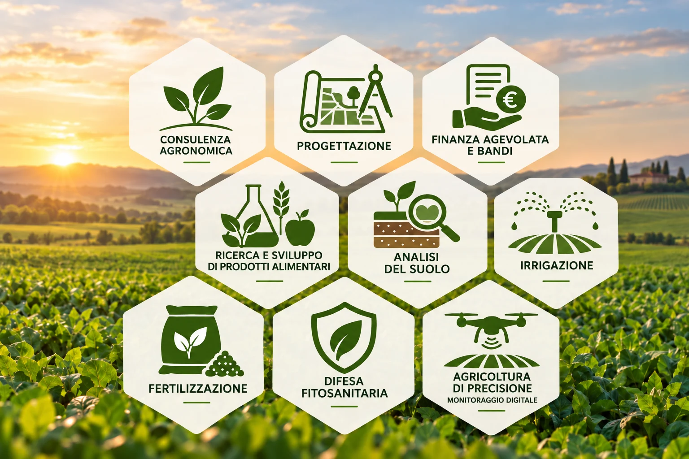

Leggi i 9 ambiti di intervento
- Consulenza agronomica
- Progettazione
- Finanza agevolata e bandi
- Ricerca e sviluppo di prodotti alimentari
- Analisi del suolo
- Irrigazione
- Fertilizzazione
- Difesa fitosanitaria
- Agricoltura di precisione e monitoraggio digitale
Studio Tecnico Ferba
Sono il Dott. Gianluca Ferba. Affianco imprese e professionisti nella gestione di processi, qualità e documentazione tecnica. Integro competenze agronomiche e alimentari per affrontare esigenze operative e sviluppare nuovi progetti.
Ogni incarico parte dall’ascolto e dall’analisi: un percorso concreto, costruito intorno agli obiettivi e alle risorse della tua attività.
Conosci il mio approccioLe competenze al servizio
della tua impresa.
Un supporto tecnico concreto, costruito intorno alle esigenze della tua attività.
Agronomia e zootecnia
Assistenza tecnica alle aziende agricole e agli allevamenti, con attenzione alla produzione, alla gestione e alla tracciabilità.
Esplora il servizioHACCP e sicurezza alimentare
Piani di autocontrollo, igiene, allergeni e documentazione per accompagnare le attività alimentari nella gestione quotidiana.
Esplora il servizioQualità e sviluppo agroalimentare
Qualità, materie prime e processi: una visione integrata per organizzare i documenti e valorizzare le produzioni.
Esplora il servizioInvestire con una direzione.
Innovare con un metodo.
Dare forma a un progetto significa mettere in relazione risorse, obiettivi e possibilità.
Finanza agevolata
Un primo confronto per inquadrare il progetto d’impresa e valutare opportunità di sostegno coerenti con i suoi obiettivi.
Ricerca e sviluppo alimentare
Obiettivi, materie prime, processo e qualità: accompagno la definizione di un percorso progettuale per nuovi prodotti alimentari.
Prima capire.
Poi costruire il percorso.
La consulenza parte dalla realtà dell’impresa, dalle sue priorità e dalle risorse disponibili.
Ascolto
Comprendo la tua attività, gli obiettivi e i vincoli del progetto.
Analisi
Individuo le priorità tecniche e la documentazione utile.
Supporto
Definisco con te un percorso proporzionato alle esigenze dell’impresa.
Una visione d’insieme.
Un interlocutore diretto.
La mia formazione unisce scienze agrarie e tecnologie alimentari. Porto questa visione integrata nel lavoro con le imprese, con attenzione a qualità, conformità, tracciabilità e innovazione.
Conosci il mio approccioEsigenze diverse.
Lo stesso rigore tecnico.
Operi solo a Palermo?
Lavoro prevalentemente a Palermo e in Sicilia. Ulteriori aree e modalità di collaborazione si valutano su richiesta.
Puoi aiutarmi con il manuale HACCP?
Offro supporto per autocontrollo alimentare, procedure e documentazione, in relazione alla tipologia di attività e ai requisiti applicabili.
Ti occupi di etichettatura e tracciabilità?
Sì. Informazioni al consumatore, allergeni, etichette e tracciabilità rientrano nelle aree di consulenza. Gli adempimenti specifici si valutano caso per caso.
Ogni progetto comincia
da un confronto.
Raccontami la tua attività e l’obiettivo che vuoi raggiungere.